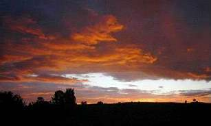
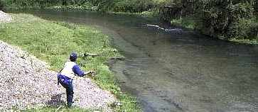
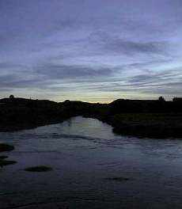

釣行日誌 ＮＺ編
１１月 メイフライの乱舞する春の小川
2000/11/03 (FRI)
夕方から、スプリングクリークへ。 最初の淵で見事なタイミングのライズを釣った。35cmのレインボー。出だしが良いと気分が良い。
続く長い淵で、釣るべき魚を、意図せず釣ってしまう。ドライフライを流しっぱなしにして移動し始めたら、背後でガンガンとラインを引っ張られた。合わせてみると40cmの鱒が彼方で跳ねる。（笑）
淵の中に沈んだ流木を気にしながらなんとかキャッチ。再三流したにもかかわらず、ドライには出なかった。流す途中で沈んだフライに出たのか？ 不思議な１尾、でもうれしい。
おなじみの場所ではずしたりしながら夕まづめとなる。瀬の頭で１尾、藪の下で１尾、青色の背中をした虹鱒を釣る。

日の長いワイカト地方の夕暮れ。
2000/11/09 (THU)
テストが終わり、一安心。
山麓の川、午後４時半から日没８時過ぎまで
最初の淵で、またしても釣れてしまった。なぜかドライフライが沈んだときに喰うなぁ？
次の瀬で、30cmぐらいのレインボーとブラウンとが連続してヒット。お約束のトロ淵では、40cmのブラウンが竿を軋ませた。綺麗な魚体と激しいファイト。ブラウンは独特の味がある。
以後、なぜかしぶいポイントが延々と続く。オープン以降一ヶ月間ヒトにいじめられて魚もこすくなっているのだろう。
小さな淵でひざまづいてキャストしていると、シュボン！という魅力的な音。静かに投げたパラシュートを茜色の頬がくわえた。水面に虹の帯をきらめかせながらレインボーがファイトする。至福の夕暮れ。
2000/11/11 (SAT)
早起きしてＮ君といつも行ったことのないルートでスプリングクリークに入る。国道からはずれて狭い農道に入り、どんづまりの農家で、川まで私有地を歩いていっていいか訊く。おじいさんが快く案内してくれて、トコトコと川まで降りる。二つのスプリングクリークが合流しているところから少し下流に大きな淵ができている。その淵からずっと釣り上がる。予想以上に魚は多い。
Ｎ君がフライボックスを落としたりしたが、楽しみながら遡行する。弁当を食べた淵の対岸に、大きいのが２尾、ゆらゆらと餌をあさっている。Ｎ君がしつこく試みるが、ドラッグがかかってフライをうまく流せない。しかし、流されかけたフライに、ふらりと反転したレインボーがぱっくり食いついてまさかのヒット！ 残念ながら、あっという間に下流に走ってジャンプした鱒にフライを外されてしまう。Ｎ君の無念さが気の毒である。
さらに遡行を続け、浅い瀬の岸沿いに４尾の影を見つける。

Ｎ君が必殺の忍び足で近づいてキャストするが、運悪くラインを気取られてみんな逃げてしまった。
ある淵を渡ろうとして、対岸の深みに大きな鱒を見つけた。必殺のバッタフライを流してぱっくり食い付いたものの、早あわせで失敗する。涙。
木立に囲まれた狭い淵で、大物３尾を発見。Ｎ君が中型をみごとに誘い出すが、下流に走られ岩で切られる。今日は不運続きのＮ君である。
帰り道、暗くなる直前、８時過ぎから狂乱のイブニングが始まる。川面すべてにライズリングが広がっていた。驚喜、興奮、熱中のひととき。
2000/11/12 (SUN)
先週に味をしめ、スプリングクリークの夕まづめを狙う。夕日を瀬に受けてキャストしていると、もっこりライズした虹鱒の頬から体側にかけて夕日が反射する。心臓が震える音が聞こえる。
いつもの合流点で、かすかに見える小さなライズをしつこく狙っていると、とうとう16番のアダムスに食い付いた。空しか見えない夕闇の中、魚に引きずられてしかたなく流れを下る。ところどころ藻が生えていて足元が不安である。
苦労した末に、45cmの丸々太った虹鱒が、ネットに収まった。

釣行日誌ＮＺ編 目次へ
サイトマップ
ホームへ
お問い合わせ